flashier_stocks
Matthew Stephens
2021-05-22
Last updated: 2021-05-23
Checks: 7 0
Knit directory: misc/analysis/
This reproducible R Markdown analysis was created with workflowr (version 1.6.2). The Checks tab describes the reproducibility checks that were applied when the results were created. The Past versions tab lists the development history.
Great! Since the R Markdown file has been committed to the Git repository, you know the exact version of the code that produced these results.
Great job! The global environment was empty. Objects defined in the global environment can affect the analysis in your R Markdown file in unknown ways. For reproduciblity it’s best to always run the code in an empty environment.
The command set.seed(1) was run prior to running the code in the R Markdown file. Setting a seed ensures that any results that rely on randomness, e.g. subsampling or permutations, are reproducible.
Great job! Recording the operating system, R version, and package versions is critical for reproducibility.
Nice! There were no cached chunks for this analysis, so you can be confident that you successfully produced the results during this run.
Great job! Using relative paths to the files within your workflowr project makes it easier to run your code on other machines.
Great! You are using Git for version control. Tracking code development and connecting the code version to the results is critical for reproducibility.
The results in this page were generated with repository version 749540f. See the Past versions tab to see a history of the changes made to the R Markdown and HTML files.
Note that you need to be careful to ensure that all relevant files for the analysis have been committed to Git prior to generating the results (you can use wflow_publish or wflow_git_commit). workflowr only checks the R Markdown file, but you know if there are other scripts or data files that it depends on. Below is the status of the Git repository when the results were generated:
Ignored files:
Ignored: .DS_Store
Ignored: .Rhistory
Ignored: .Rproj.user/
Ignored: analysis/.RData
Ignored: analysis/.Rhistory
Ignored: analysis/ALStruct_cache/
Ignored: data/.Rhistory
Ignored: data/pbmc/
Untracked files:
Untracked: .dropbox
Untracked: Icon
Untracked: analysis/GHstan.Rmd
Untracked: analysis/GTEX-cogaps.Rmd
Untracked: analysis/PACS.Rmd
Untracked: analysis/Rplot.png
Untracked: analysis/SPCAvRP.rmd
Untracked: analysis/admm_02.Rmd
Untracked: analysis/admm_03.Rmd
Untracked: analysis/compare-transformed-models.Rmd
Untracked: analysis/cormotif.Rmd
Untracked: analysis/cp_ash.Rmd
Untracked: analysis/eQTL.perm.rand.pdf
Untracked: analysis/eb_prepilot.Rmd
Untracked: analysis/eb_var.Rmd
Untracked: analysis/ebpmf1.Rmd
Untracked: analysis/flash_test_tree.Rmd
Untracked: analysis/flash_tree.Rmd
Untracked: analysis/ieQTL.perm.rand.pdf
Untracked: analysis/lasso_em_03.Rmd
Untracked: analysis/m6amash.Rmd
Untracked: analysis/mash_bhat_z.Rmd
Untracked: analysis/mash_ieqtl_permutations.Rmd
Untracked: analysis/mixsqp.Rmd
Untracked: analysis/mr.ash_lasso_init.Rmd
Untracked: analysis/mr.mash.test.Rmd
Untracked: analysis/mr_ash_modular.Rmd
Untracked: analysis/mr_ash_parameterization.Rmd
Untracked: analysis/mr_ash_ridge.Rmd
Untracked: analysis/mv_gaussian_message_passing.Rmd
Untracked: analysis/nejm.Rmd
Untracked: analysis/nmf_bg.Rmd
Untracked: analysis/normal_conditional_on_r2.Rmd
Untracked: analysis/normalize.Rmd
Untracked: analysis/pbmc.Rmd
Untracked: analysis/poisson_transform.Rmd
Untracked: analysis/pseudodata.Rmd
Untracked: analysis/qrnotes.txt
Untracked: analysis/ridge_iterative_02.Rmd
Untracked: analysis/ridge_iterative_splitting.Rmd
Untracked: analysis/samps/
Untracked: analysis/sc_bimodal.Rmd
Untracked: analysis/shrinkage_comparisons_changepoints.Rmd
Untracked: analysis/susie_en.Rmd
Untracked: analysis/susie_z_investigate.Rmd
Untracked: analysis/svd-timing.Rmd
Untracked: analysis/temp.RDS
Untracked: analysis/temp.Rmd
Untracked: analysis/test-figure/
Untracked: analysis/test.Rmd
Untracked: analysis/test.Rpres
Untracked: analysis/test.md
Untracked: analysis/test_qr.R
Untracked: analysis/test_sparse.Rmd
Untracked: analysis/z.txt
Untracked: code/multivariate_testfuncs.R
Untracked: code/rqb.hacked.R
Untracked: data/4matthew/
Untracked: data/4matthew2/
Untracked: data/E-MTAB-2805.processed.1/
Untracked: data/ENSG00000156738.Sim_Y2.RDS
Untracked: data/GDS5363_full.soft.gz
Untracked: data/GSE41265_allGenesTPM.txt
Untracked: data/Muscle_Skeletal.ACTN3.pm1Mb.RDS
Untracked: data/Thyroid.FMO2.pm1Mb.RDS
Untracked: data/bmass.HaemgenRBC2016.MAF01.Vs2.MergedDataSources.200kRanSubset.ChrBPMAFMarkerZScores.vs1.txt.gz
Untracked: data/bmass.HaemgenRBC2016.Vs2.NewSNPs.ZScores.hclust.vs1.txt
Untracked: data/bmass.HaemgenRBC2016.Vs2.PreviousSNPs.ZScores.hclust.vs1.txt
Untracked: data/eb_prepilot/
Untracked: data/finemap_data/fmo2.sim/b.txt
Untracked: data/finemap_data/fmo2.sim/dap_out.txt
Untracked: data/finemap_data/fmo2.sim/dap_out2.txt
Untracked: data/finemap_data/fmo2.sim/dap_out2_snp.txt
Untracked: data/finemap_data/fmo2.sim/dap_out_snp.txt
Untracked: data/finemap_data/fmo2.sim/data
Untracked: data/finemap_data/fmo2.sim/fmo2.sim.config
Untracked: data/finemap_data/fmo2.sim/fmo2.sim.k
Untracked: data/finemap_data/fmo2.sim/fmo2.sim.k4.config
Untracked: data/finemap_data/fmo2.sim/fmo2.sim.k4.snp
Untracked: data/finemap_data/fmo2.sim/fmo2.sim.ld
Untracked: data/finemap_data/fmo2.sim/fmo2.sim.snp
Untracked: data/finemap_data/fmo2.sim/fmo2.sim.z
Untracked: data/finemap_data/fmo2.sim/pos.txt
Untracked: data/logm.csv
Untracked: data/m.cd.RDS
Untracked: data/m.cdu.old.RDS
Untracked: data/m.new.cd.RDS
Untracked: data/m.old.cd.RDS
Untracked: data/mainbib.bib.old
Untracked: data/mat.csv
Untracked: data/mat.txt
Untracked: data/mat_new.csv
Untracked: data/matrix_lik.rds
Untracked: data/paintor_data/
Untracked: data/running_data_chris.csv
Untracked: data/running_data_matthew.csv
Untracked: data/temp.txt
Untracked: data/y.txt
Untracked: data/y_f.txt
Untracked: data/zscore_jointLCLs_m6AQTLs_susie_eQTLpruned.rds
Untracked: data/zscore_jointLCLs_random.rds
Untracked: explore_udi.R
Untracked: output/fit.k10.rds
Untracked: output/fit.varbvs.RDS
Untracked: output/glmnet.fit.RDS
Untracked: output/test.bv.txt
Untracked: output/test.gamma.txt
Untracked: output/test.hyp.txt
Untracked: output/test.log.txt
Untracked: output/test.param.txt
Untracked: output/test2.bv.txt
Untracked: output/test2.gamma.txt
Untracked: output/test2.hyp.txt
Untracked: output/test2.log.txt
Untracked: output/test2.param.txt
Untracked: output/test3.bv.txt
Untracked: output/test3.gamma.txt
Untracked: output/test3.hyp.txt
Untracked: output/test3.log.txt
Untracked: output/test3.param.txt
Untracked: output/test4.bv.txt
Untracked: output/test4.gamma.txt
Untracked: output/test4.hyp.txt
Untracked: output/test4.log.txt
Untracked: output/test4.param.txt
Untracked: output/test5.bv.txt
Untracked: output/test5.gamma.txt
Untracked: output/test5.hyp.txt
Untracked: output/test5.log.txt
Untracked: output/test5.param.txt
Note that any generated files, e.g. HTML, png, CSS, etc., are not included in this status report because it is ok for generated content to have uncommitted changes.
These are the previous versions of the repository in which changes were made to the R Markdown (analysis/flashier_stocks.Rmd) and HTML (docs/flashier_stocks.html) files. If you’ve configured a remote Git repository (see ?wflow_git_remote), click on the hyperlinks in the table below to view the files as they were in that past version.
| File | Version | Author | Date | Message |
|---|---|---|---|---|
| Rmd | 749540f | Matthew Stephens | 2021-05-23 | workflowr::wflow_publish(“flashier_stocks.Rmd”) |
| html | 1cfd374 | Matthew Stephens | 2021-05-22 | Build site. |
| Rmd | 083b740 | Matthew Stephens | 2021-05-22 | ../data/prices.csv |
Introduction
In preparing homework for my class I ran flashier on some stock data. (Note that flash errored out here, and in any case flashier was quite a bit faster…) It got me thinking about appropriate application of flash/flashier for time series, so I’m reporting the results here.
The data were downloaded as in https://stephens999.github.io/stat34800/stocks.html We probably could do with looking at a bigger dataset if we want to take this seriously, but I do that for now.
# AAPL: Apple
# NFLX: Netflix
# AMZN: Amazon
# MMM: 3M
# K: Kellogs
# O: Realty Income Corp
# NSRGY: Nestle
# LDSVF: Lindt
# JPM: JP Morgan Chase
# JNJ: Johnson and Johnson
# TSLA: Tesla
# V: Visa
# PFE: Pfizerprices = read.csv("../data/prices.csv")
log_prices = log(prices)
log_returns = apply(log_prices,2, diff)You can see some structure in the correlation matrix: the tech companys are correlated, as are the PFE/JNJ and the financial companies (V,JPM).
S = cor(log_returns)
heatmap(S, xlab = names(prices), symm=TRUE)
| Version | Author | Date |
|---|---|---|
| 1cfd374 | Matthew Stephens | 2021-05-22 |
Flashier on the raw data
Note I tried to use column-specific residual variances but it errored out. So I switched to constant variances. Backfitting seemed to clean up the factors so I did that.
#library("flashr")
library("ebnm")
library("flashier")
#fit.f = flashr::flash(as.matrix(log_returns),ebnm_fn = "ebnm_pl") ## errors out
#fit.f = flashier::flash(as.matrix(log_returns),prior.family = prior.point.laplace(), var.type = 2) # this produces an error
fit.f = flashier::flash(as.matrix(log_returns),prior.family = prior.point.laplace(), var.type = 0, backfit=TRUE)Adding factor 1 to flash object...
Adding factor 2 to flash object...
Adding factor 3 to flash object...
Adding factor 4 to flash object...
Adding factor 5 to flash object...
Adding factor 6 to flash object...
Adding factor 7 to flash object...
Adding factor 8 to flash object...
Adding factor 9 to flash object...
Adding factor 10 to flash object...
Adding factor 11 to flash object...
Adding factor 12 to flash object...
Factor doesn't significantly increase objective and won't be added.
Wrapping up...
Done.
Backfitting 11 factors (tolerance: 5.17e-04)...
Difference between iterations is within 1.0e+03...
Difference between iterations is within 1.0e+02...
Difference between iterations is within 1.0e+01...
Difference between iterations is within 1.0e+00...
Difference between iterations is within 1.0e-01...
Difference between iterations is within 1.0e-02...
Difference between iterations is within 1.0e-03...
Wrapping up...
Done.
Nullchecking 11 factors...
Done.Plot the factors.
for(i in 1:11){
barplot(fit.f$loadings.pm[[2]][,i], names.arg=names(prices), horiz=TRUE,las=2, main=paste0("Factor ",i))
}
| Version | Author | Date |
|---|---|---|
| 1cfd374 | Matthew Stephens | 2021-05-22 |
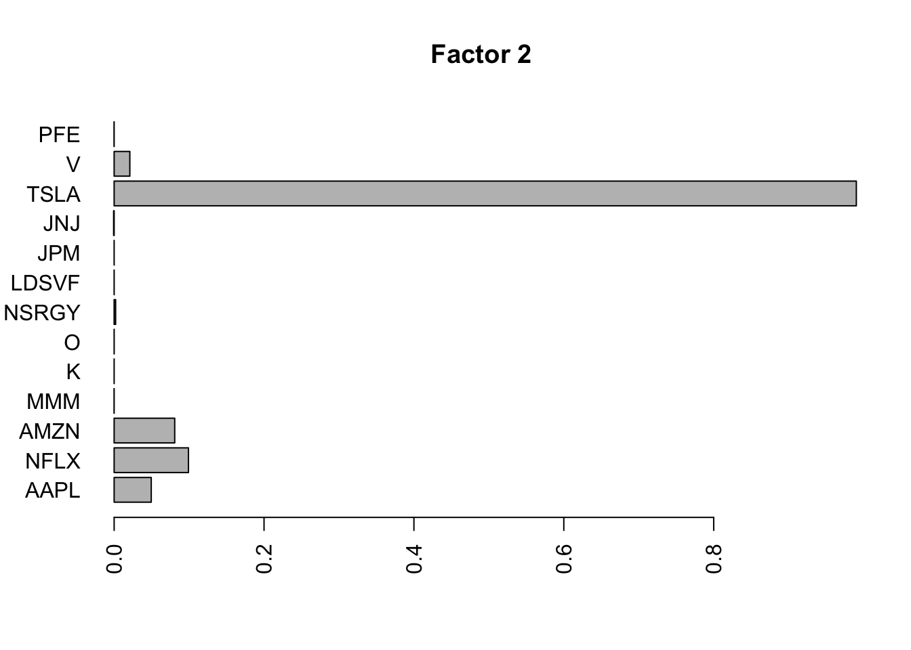
| Version | Author | Date |
|---|---|---|
| 1cfd374 | Matthew Stephens | 2021-05-22 |
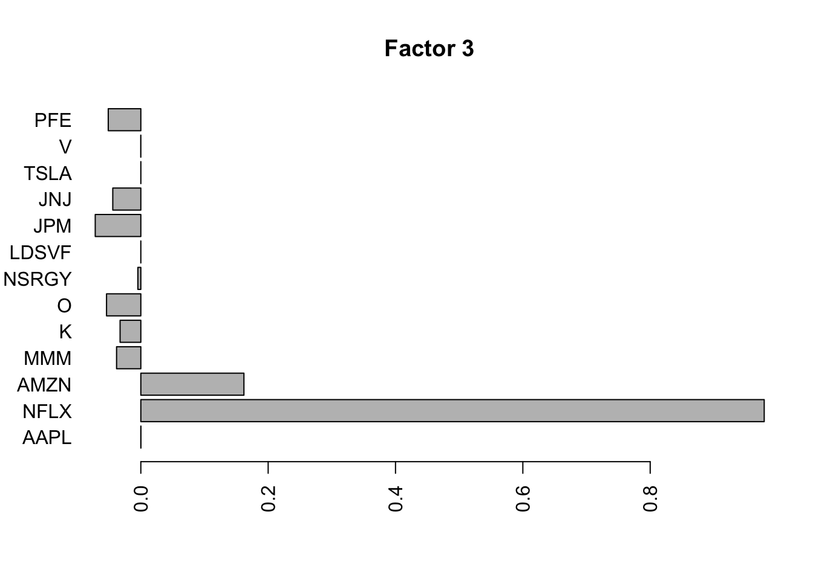
| Version | Author | Date |
|---|---|---|
| 1cfd374 | Matthew Stephens | 2021-05-22 |
| Version | Author | Date |
|---|---|---|
| 1cfd374 | Matthew Stephens | 2021-05-22 |
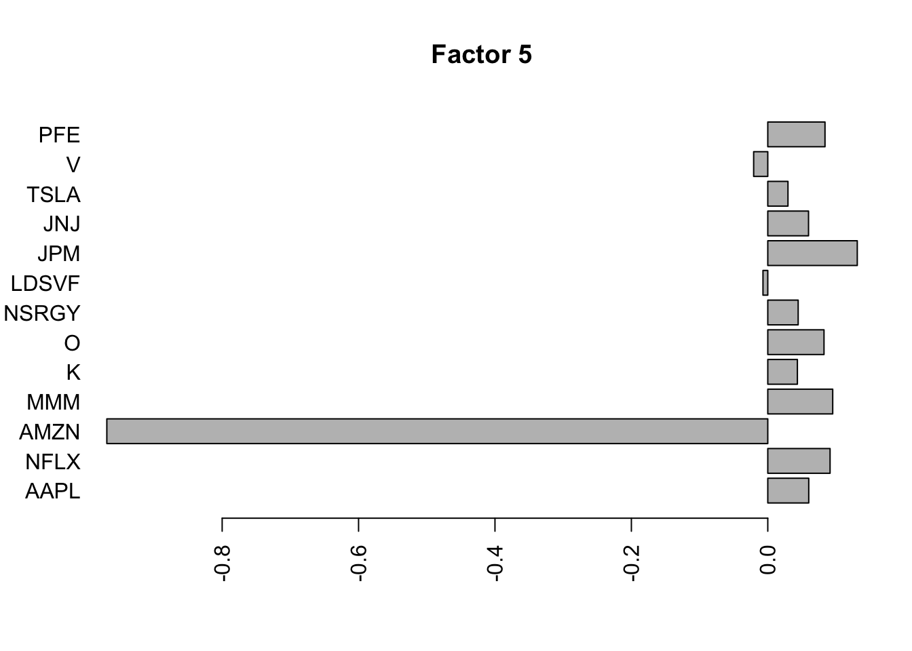
| Version | Author | Date |
|---|---|---|
| 1cfd374 | Matthew Stephens | 2021-05-22 |
| Version | Author | Date |
|---|---|---|
| 1cfd374 | Matthew Stephens | 2021-05-22 |
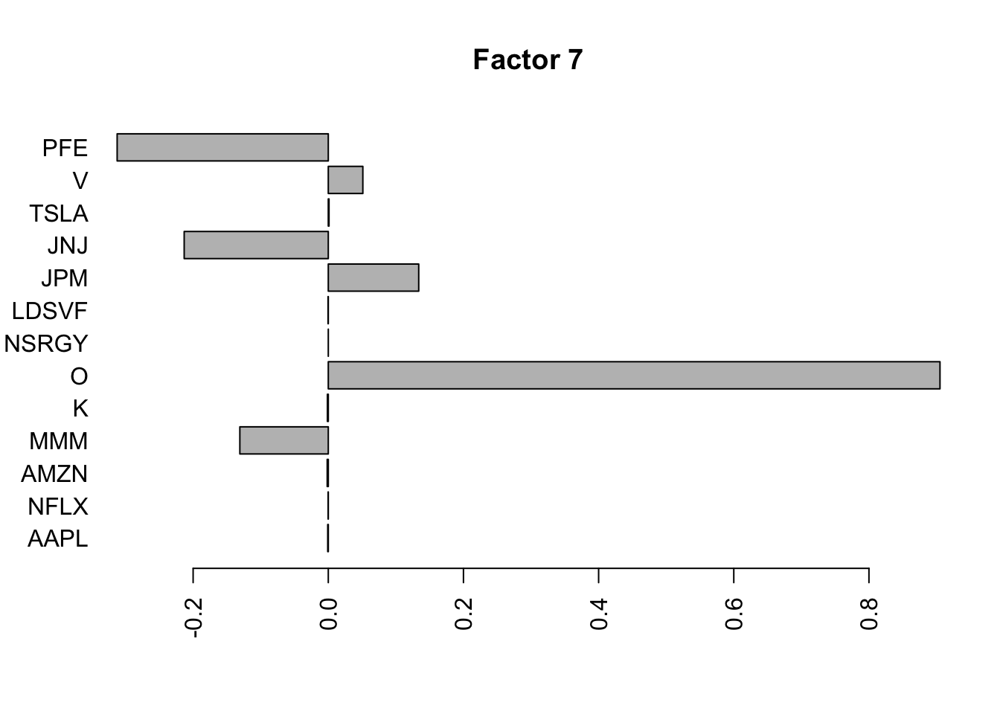
| Version | Author | Date |
|---|---|---|
| 1cfd374 | Matthew Stephens | 2021-05-22 |
| Version | Author | Date |
|---|---|---|
| 1cfd374 | Matthew Stephens | 2021-05-22 |
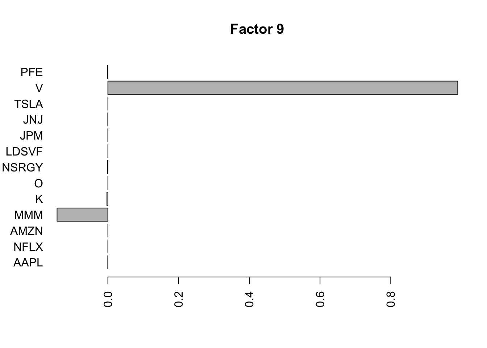
| Version | Author | Date |
|---|---|---|
| 1cfd374 | Matthew Stephens | 2021-05-22 |
| Version | Author | Date |
|---|---|---|
| 1cfd374 | Matthew Stephens | 2021-05-22 |
| Version | Author | Date |
|---|---|---|
| 1cfd374 | Matthew Stephens | 2021-05-22 |
for(i in 1:11){
plot(fit.f$loadings.pm[[1]][,i], main=paste0("Factor ",i))
}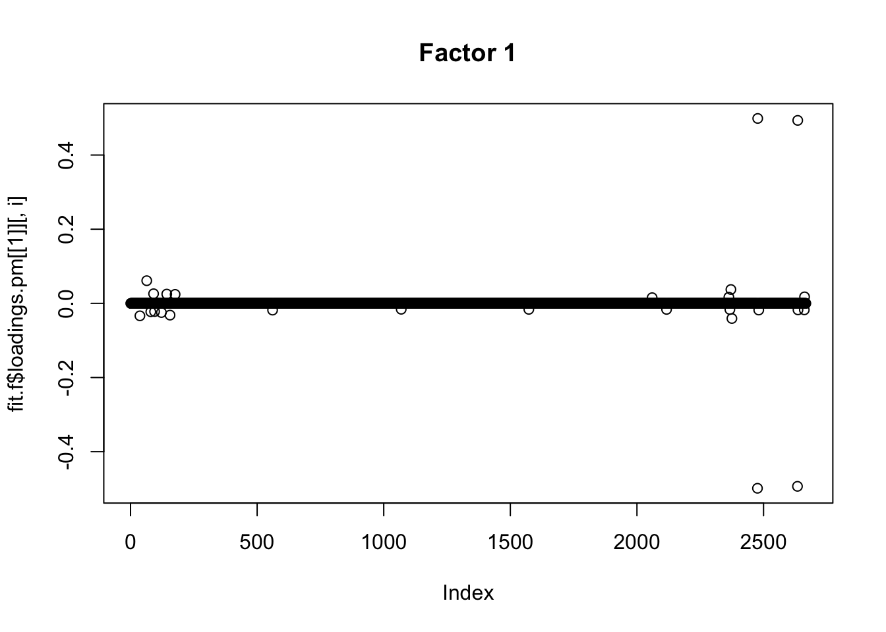
| Version | Author | Date |
|---|---|---|
| 1cfd374 | Matthew Stephens | 2021-05-22 |
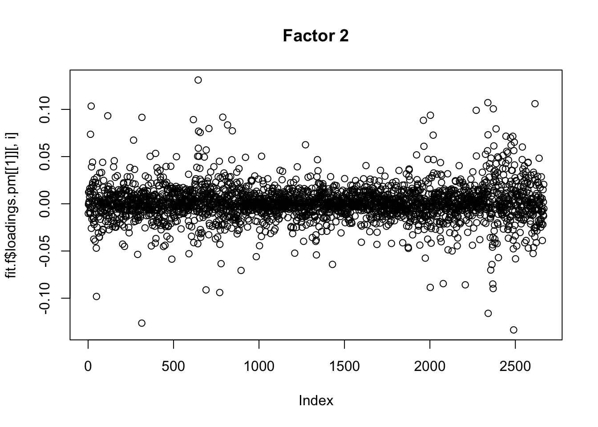
| Version | Author | Date |
|---|---|---|
| 1cfd374 | Matthew Stephens | 2021-05-22 |
| Version | Author | Date |
|---|---|---|
| 1cfd374 | Matthew Stephens | 2021-05-22 |
| Version | Author | Date |
|---|---|---|
| 1cfd374 | Matthew Stephens | 2021-05-22 |
| Version | Author | Date |
|---|---|---|
| 1cfd374 | Matthew Stephens | 2021-05-22 |
Flashier on the correlation matrix
Try factor analysis on the correlation matrix. We see a lot fewer factors. I am interested why this is. I didn’t really expect such a big difference when the factors are dense, as they seem to be here (in time space).
One possibility is that although the inferred factors are dense, they are long tailed and the inferred factors are driven by the outliers. It might be worth doing some simulations with dense long-tailed factors and comparing inference from correlation vs full data.
Another possibility is that many of the raw data results are driven by stock-specific factors. Here stock-specific factors are not represented because I remove the diagonal. And the 2 factors identified could be thought of as 3 factors if we went non-negative… in that case the differences between the results do not look so stark.
I did try running this without removing diagonal, but the stock-specific factors don’t get picked up; I think this may be due to problems converging to them (eg svd would not initialize near them…) That may suggest it could also be difficult to find other sparse factors of course (eg involving pairs of stocks).
Smiss = S
diag(Smiss) <- NA
S.f = flashier::flash(Smiss,prior.family = prior.point.laplace(), var.type = 0, backfit=TRUE)Adding factor 1 to flash object...
Adding factor 2 to flash object...
Adding factor 3 to flash object...
Factor doesn't significantly increase objective and won't be added.
Wrapping up...
Done.
Backfitting 2 factors (tolerance: 2.52e-06)...
Difference between iterations is within 1.0e+00...
Difference between iterations is within 1.0e-01...
Difference between iterations is within 1.0e-02...
Difference between iterations is within 1.0e-03...
Difference between iterations is within 1.0e-04...
Difference between iterations is within 1.0e-05...
Wrapping up...
Done.
Nullchecking 2 factors...
Done.for(i in 1:2){
barplot(S.f$loadings.pm[[2]][,i], names.arg=names(prices), horiz=TRUE,las=2, main=paste0("Factor ",i))
}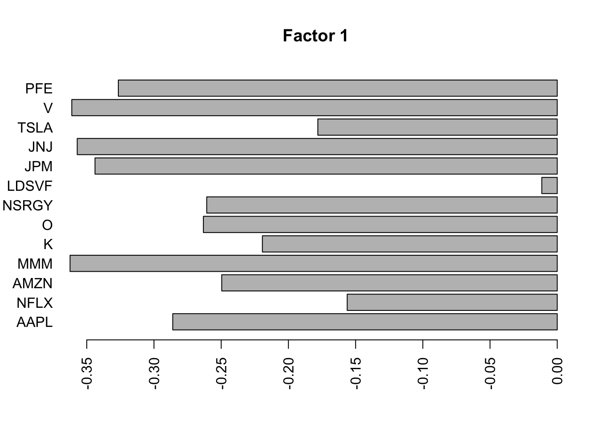
| Version | Author | Date |
|---|---|---|
| 1cfd374 | Matthew Stephens | 2021-05-22 |
Flashier on the covariance matrix
Try factor analysis on the covariance matrix. We still see a lot fewer factors.
S2 = cov(log_returns)
S2.f = flashier::flash(S2,prior.family = prior.point.laplace(), var.type = 0, backfit = TRUE)Adding factor 1 to flash object...
Adding factor 2 to flash object...
Adding factor 3 to flash object...
Adding factor 4 to flash object...
Adding factor 5 to flash object...
Factor doesn't significantly increase objective and won't be added.
Wrapping up...
Done.
Backfitting 4 factors (tolerance: 2.52e-06)...
Difference between iterations is within 1.0e+01...
Difference between iterations is within 1.0e+00...
Difference between iterations is within 1.0e-01...
Difference between iterations is within 1.0e-02...
Difference between iterations is within 1.0e-03...
Difference between iterations is within 1.0e-04...
Difference between iterations is within 1.0e-05...
Wrapping up...
Done.
Nullchecking 4 factors...
Done.for(i in 1:4){
barplot(S2.f$loadings.pm[[2]][,i], names.arg=names(prices), horiz=TRUE,las=2, main=paste0("Factor ",i))
}
| Version | Author | Date |
|---|---|---|
| 1cfd374 | Matthew Stephens | 2021-05-22 |
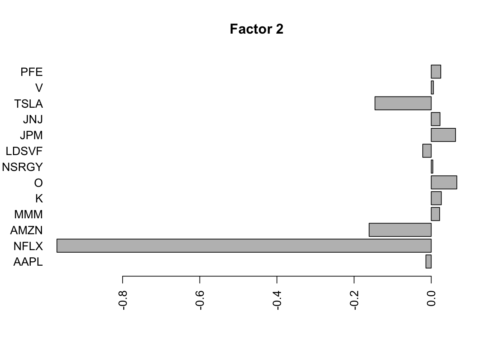
| Version | Author | Date |
|---|---|---|
| 1cfd374 | Matthew Stephens | 2021-05-22 |
| Version | Author | Date |
|---|---|---|
| 1cfd374 | Matthew Stephens | 2021-05-22 |

| Version | Author | Date |
|---|---|---|
| 1cfd374 | Matthew Stephens | 2021-05-22 |
Flashier on the standardized raw data
Here I tried rerunning on the standardized raw data to see how that affects things.
fit.f3 = flashier::flash(scale(log_returns),prior.family = prior.point.laplace(), var.type = 0, backfit = TRUE)Adding factor 1 to flash object...
Adding factor 2 to flash object...
Adding factor 3 to flash object...
Adding factor 4 to flash object...
Adding factor 5 to flash object...
Adding factor 6 to flash object...
Adding factor 7 to flash object...
Adding factor 8 to flash object...
Adding factor 9 to flash object...
Adding factor 10 to flash object...
Adding factor 11 to flash object...
Adding factor 12 to flash object...
Adding factor 13 to flash object...
Adding factor 14 to flash object...
Factor doesn't significantly increase objective and won't be added.
Wrapping up...
Done.
Backfitting 13 factors (tolerance: 5.17e-04)...
Difference between iterations is within 1.0e+02...
Difference between iterations is within 1.0e+01...
Difference between iterations is within 1.0e+00...
Difference between iterations is within 1.0e-01...
Difference between iterations is within 1.0e-02...
Difference between iterations is within 1.0e-03...
Wrapping up...
Done.
Nullchecking 13 factors...
Done.for(i in 1:13){
barplot(fit.f3$loadings.pm[[2]][,i], names.arg=names(prices), horiz=TRUE,las=2, main=paste0("Factor ",i))
}
| Version | Author | Date |
|---|---|---|
| 1cfd374 | Matthew Stephens | 2021-05-22 |
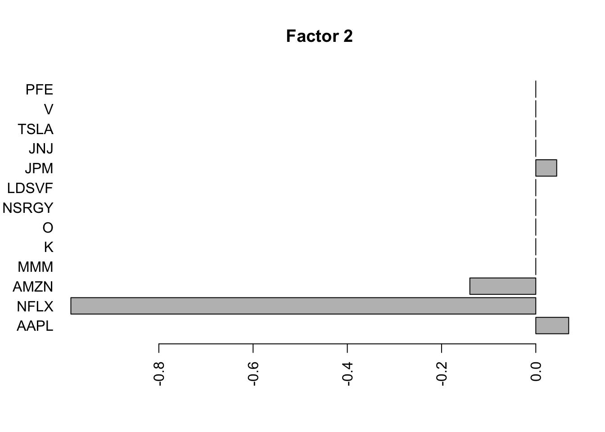
| Version | Author | Date |
|---|---|---|
| 1cfd374 | Matthew Stephens | 2021-05-22 |
for(i in 1:13){
plot(fit.f3$loadings.pm[[1]][,i], main=paste0("Factor ",i))
}
Wavelet transformed data
Since these are time series it would be nice to try wavelet transforming them before applying flashier. Here I explore some of these ideas.
First define haar transform functions
haar = function(x,scale= sqrt(2)){
if(length(x)==1){
return(x)
}
else{
x = matrix(x,nrow=2)
diff = (x[1,]-x[2,])/scale
sum = (x[1,]+x[2,])/scale
return(c(diff, haar(sum)))
}
}
haar_inv = function(x,scale=sqrt(2)){
n=length(x)
if(n==1){
return(x)
}
x = matrix(scale*x,nrow=2,byrow=TRUE)
smoothed = haar_inv(x[2,])
return(as.vector(rbind(smoothed+x[1,], smoothed-x[1,]))/2)
}Now I plot the above fitted factors after haar transform. There isn’t an obvious decrease in sparsity (not surpising since there was not an obvious spatiol component.)
for(i in 1:13){
plot(haar(fit.f3$loadings.pm[[1]][1:2048,i]), main=paste0("Factor ",i, " (transformed space)"))
}

Compute the haar transform of log returns:
lp.h = log_returns[1:2048,]
# do haar wavelet decomposition on log-returns and save in lp.h
for(i in 1:ncol(log_prices)){
lp.h[,i] = haar(log_returns[1:2048,i])
}Quick look at correlations of the transformed data.
S.h = cor(lp.h)
heatmap(S.h, xlab = names(prices), symm=TRUE)Maybe it makes sense just to do the higher scales?
low_res = 2048-(0:255)
S.h = cor(lp.h[low_res,])
heatmap(S.h, xlab = names(prices), symm=TRUE)
| Version | Author | Date |
|---|---|---|
| 1cfd374 | Matthew Stephens | 2021-05-22 |
I’m not quite sure of the right way to proceed here… I’m just going to apply flash to the wavelet transformed data, even though that does not really seem quite right (the iid prior on wavelet coefficients at different scales does not really seem sensible.)
lp.h.f = flashier::flash(lp.h, prior.family=prior.point.laplace(), backfit=TRUE)Adding factor 1 to flash object...
Adding factor 2 to flash object...
Adding factor 3 to flash object...
Adding factor 4 to flash object...
Adding factor 5 to flash object...
Adding factor 6 to flash object...
Adding factor 7 to flash object...
Adding factor 8 to flash object...
Adding factor 9 to flash object...
Factor doesn't significantly increase objective and won't be added.
Wrapping up...
Done.
Backfitting 8 factors (tolerance: 3.97e-04)...
Difference between iterations is within 1.0e+02...
Difference between iterations is within 1.0e+01...
Difference between iterations is within 1.0e+00...
Difference between iterations is within 1.0e-01...
Difference between iterations is within 1.0e-02...
Difference between iterations is within 1.0e-03...
Difference between iterations is within 1.0e-04...
Wrapping up...
Done.
Nullchecking 8 factors...
Done.for(i in 1:8){
barplot(lp.h.f$loadings.pm[[2]][,i], names.arg=names(prices), horiz=TRUE,las=2, main=paste0("Factor ",i))
}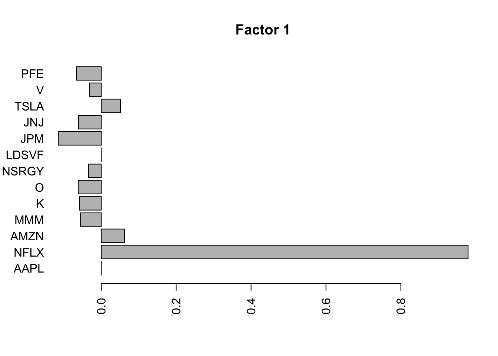
| Version | Author | Date |
|---|---|---|
| 1cfd374 | Matthew Stephens | 2021-05-22 |
 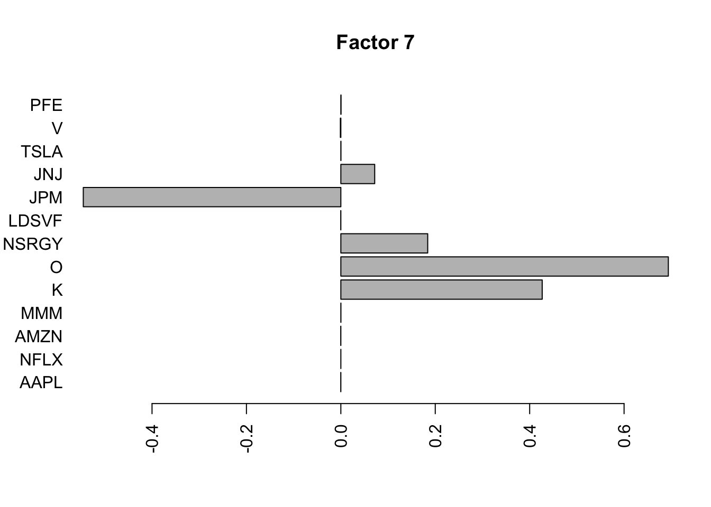
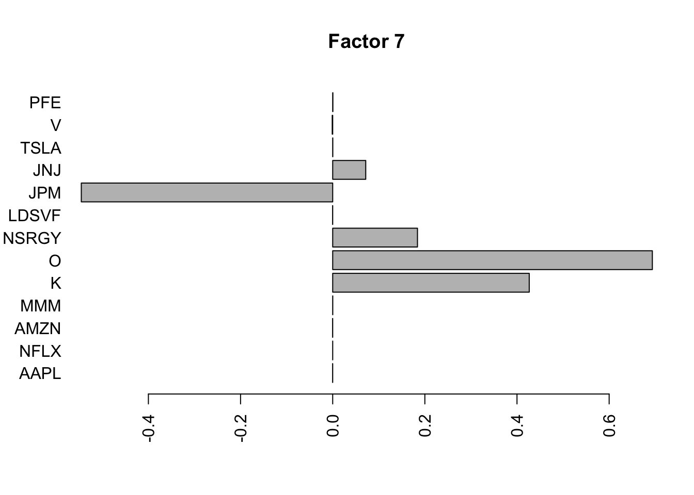
for(i in 1:8){
plot(lp.h.f$loadings.pm[[1]][,i], main=paste0("Factor ",i," (transformed space)"))
}for(i in 1:8){
plot(haar_inv(lp.h.f$loadings.pm[[1]][,i]), main=paste0("Factor ",i),type="l")
}
sessionInfo()R version 3.6.0 (2019-04-26)
Platform: x86_64-apple-darwin15.6.0 (64-bit)
Running under: macOS 10.16
Matrix products: default
BLAS: /Library/Frameworks/R.framework/Versions/3.6/Resources/lib/libRblas.0.dylib
LAPACK: /Library/Frameworks/R.framework/Versions/3.6/Resources/lib/libRlapack.dylib
locale:
[1] en_US.UTF-8/en_US.UTF-8/en_US.UTF-8/C/en_US.UTF-8/en_US.UTF-8
attached base packages:
[1] stats graphics grDevices utils datasets methods base
other attached packages:
[1] flashier_0.2.7 ebnm_0.1-24
loaded via a namespace (and not attached):
[1] Rcpp_1.0.6 pillar_1.4.6 compiler_3.6.0 later_1.1.0.1
[5] git2r_0.27.1 workflowr_1.6.2 tools_3.6.0 digest_0.6.27
[9] evaluate_0.14 lifecycle_1.0.0 tibble_3.0.4 lattice_0.20-41
[13] pkgconfig_2.0.3 rlang_0.4.10 Matrix_1.2-18 rstudioapi_0.13
[17] parallel_3.6.0 yaml_2.2.1 xfun_0.16 invgamma_1.1
[21] stringr_1.4.0 knitr_1.29 fs_1.5.0 vctrs_0.3.8
[25] rprojroot_1.3-2 grid_3.6.0 glue_1.4.2 R6_2.4.1
[29] rmarkdown_2.3 mixsqp_0.3-43 irlba_2.3.3 ashr_2.2-51
[33] magrittr_1.5 whisker_0.4 backports_1.1.10 promises_1.1.1
[37] ellipsis_0.3.1 htmltools_0.5.0 httpuv_1.5.4 stringi_1.4.6
[41] truncnorm_1.0-8 SQUAREM_2020.3 crayon_1.3.4